SATURDAY 14
Weather for Your City
sunny
76°
AQI: 1
SUNDAY 15
97° to 75°
MONDAY 16
90° to 73°
TUESDAY 17
93° to 71°
WEDNESDAY 18
80° to 60°
THURSDAY 19
77° to 69°
97° to 75°
90° to 73°
93° to 71°
80° to 60°
77° to 69°